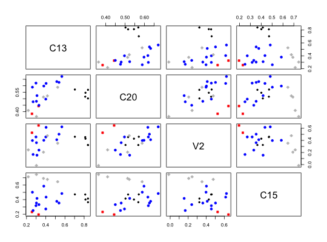

A common data reduction technique is to cluster cases (subjects). Less common, but particularly useful in psychological research, is to cluster items (variables). This may be thought of as an alternative to factor analysis, based upon a much simpler model. The cluster model is that the correlations between variables reflect that each item loads on at most one cluster, and that items that load on those clusters correlate as a function of their respective loadings on that cluster and items that define different clusters correlate as a function of their respective cluster loadings and the intercluster correlations.
Essentially, the cluster model is a Very Simple Structure factor model of complexity one (see VSS).
This function applies the iclust algorithm to hierarchically cluster items to form composite scales. Clusters are combined if coefficients alpha and beta will increase in the new cluster.
Alpha, the mean split half correlation, and beta, the worst split half correlation, are estimates of the reliability and general factor saturation of the test. (See also the omega function to estimate McDonald's coeffients \(\omega_h\) and \(\omega_t\))
iclust(r.mat, nclusters=0, alpha=3, beta=1, beta.size=4, alpha.size=3, correct=TRUE,correct.cluster=TRUE, reverse=TRUE, beta.min=.5, output=1, digits=2,labels=NULL,cut=0, n.iterations =0, title="ICLUST", plot=TRUE, weighted=TRUE,cor.gen=TRUE,SMC=TRUE,purify=TRUE,diagonal=FALSE) ICLUST(r.mat, nclusters=0, alpha=3, beta=1, beta.size=4, alpha.size=3, correct=TRUE,correct.cluster=TRUE, reverse=TRUE, beta.min=.5, output=1, digits=2,labels=NULL,cut=0,n.iterations = 0,title="ICLUST",plot=TRUE, weighted=TRUE,cor.gen=TRUE,SMC=TRUE,purify=TRUE,diagonal=FALSE) #iclust(r.mat) #use all defaults #iclust(r.mat,nclusters =3) #use all defaults and if possible stop at 3 clusters #ICLUST(r.mat, output =3) #long output shows clustering history #ICLUST(r.mat, n.iterations =3) #clean up solution by item reassignment
| r.mat | A correlation matrix or data matrix/data.frame. (If r.mat is not square i.e, a correlation matrix, the data are correlated using pairwise deletion. |
|---|---|
| nclusters | Extract clusters until nclusters remain (default will extract until the other criteria are met or 1 cluster, whichever happens first). See the discussion below for alternative techniques for specifying the number of clusters. |
| alpha | Apply the increase in alpha criterion (0) never or for (1) the smaller, 2) the average, or 3) the greater of the separate alphas. (default = 3) |
| beta | Apply the increase in beta criterion (0) never or for (1) the smaller, 2) the average, or 3) the greater of the separate betas. (default =1) |
| beta.size | Apply the beta criterion after clusters are of beta.size (default = 4) |
| alpha.size | Apply the alpha criterion after clusters are of size alpha.size (default =3) |
| correct | Correct correlations for reliability (default = TRUE) |
| correct.cluster | Correct cluster -sub cluster correlations for reliability of the sub cluster , default is TRUE)) |
| reverse | Reverse negative keyed items (default = TRUE |
| beta.min | Stop clustering if the beta is not greater than beta.min (default = .5) |
| output | 1) short, 2) medium, 3 ) long output (default =1) |
| labels | vector of item content or labels. If NULL, then the colnames are used. If FALSE, then labels are V1 .. Vn |
| cut | sort cluster loadings > absolute(cut) (default = 0) |
| n.iterations | iterate the solution n.iterations times to "purify" the clusters (default = 0) |
| digits | Precision of digits of output (default = 2) |
| title | Title for this run |
| plot | Should ICLUST.rgraph be called automatically for plotting (requires Rgraphviz default=TRUE) |
| weighted | Weight the intercluster correlation by the size of the two clusters (TRUE) or do not weight them (FALSE) |
| cor.gen | When correlating clusters with subclusters, base the correlations on the general factor (default) or general + group (cor.gen=FALSE) |
| SMC | When estimating cluster-item correlations, use the smcs as the estimate of an item communality (SMC=TRUE) or use the maximum correlation (SMC=FALSE). |
| purify | Should clusters be defined as the original groupings (purify = FAlSE) or by the items with the highest loadings on those original clusters? (purify = TRUE) |
| diagonal | Should the diagonal be included in the fit statistics. The default is not to include it. Prior to 1.2.8, the diagonal was included. |
Extensive documentation and justification of the algorithm is available in the original MBR 1979 http://personality-project.org/revelle/publications/iclust.pdf paper. Further discussion of the algorithm and sample output is available on the personality-project.org web page: http://personality-project.org/r/r.ICLUST.html
The results are best visualized using ICLUST.graph, the results of which can be saved as a dot file for the Graphviz program. http://www.graphviz.org/. The iclust.diagram is called automatically to produce cluster diagrams. The resulting diagram is not quite as pretty as what can be achieved in dot code but is quite adequate if you don't want to use an external graphics program. With the installation of Rgraphviz, ICLUST can also provide cluster graphs.
A common problem in the social sciences is to construct scales or composites of items to measure constructs of theoretical interest and practical importance. This process frequently involves administering a battery of items from which those that meet certain criteria are selected. These criteria might be rational, empirical,or factorial. A similar problem is to analyze the adequacy of scales that already have been formed and to decide whether the putative constructs are measured properly. Both of these problems have been discussed in numerous texts, as well as in myriad articles. Proponents of various methods have argued for the importance of face validity, discriminant validity, construct validity, factorial homogeneity, and theoretical importance.
Revelle (1979) proposed that hierachical cluster analysis could be used to estimate a new coefficient (beta) that was an estimate of the general factor saturation of a test. More recently, Zinbarg, Revelle, Yovel and Li (2005) compared McDonald's Omega to Chronbach's alpha and Revelle's beta. They conclude that \(\omega_h\) hierarchical is the best estimate. An algorithm for estimating omega is available as part of this package.
Revelle and Zinbarg (2009) discuss alpha, beta, and omega, as well as other estimates of reliability.
The original ICLUST program was written in FORTRAN to run on CDC and IBM mainframes and was then modified to run in PC-DOS. The R version of iclust is a completely new version written for the psych package. Please email me if you want help with this version of iclust or if you desire more features.
A requested feature (not yet available) is to specify certain items as forming a cluster. That is, to do confirmatory cluster analysis.
The program currently has three primary functions: cluster, loadings, and graphics.
In June, 2009, the option of weighted versus unweighted beta was introduced. Unweighted beta calculates beta based upon the correlation between two clusters, corrected for test length using the Spearman-Brown prophecy formala, while weighted beta finds the average interitem correlation between the items within two clusters and then finds beta from this. That is, for two clusters A and B of size N and M with between average correlation rb, weighted beta is (N+M)^2 rb/(Va +Vb + 2Cab). Raw (unweighted) beta is 2rab/(1+rab) where rab = Cab/sqrt(VaVb). Weighted beta seems a more appropriate estimate and is now the default. Unweighted beta is still available for consistency with prior versions.
Also modified in June, 2009 was the way of correcting for item overlap when calculating the cluster-subcluster correlations for the graphic output. This does not affect the final cluster solution, but does produce slightly different path values. In addition, there are two ways to solve for the cluster - subcluster correlation.
Given the covariance between two clusters, Cab with average rab = Cab/(N*M), and cluster variances Va and Vb with Va = N + N*(N-1)*ra then the correlation of cluster A with the combined cluster AB is either
a) ((N^2)ra + Cab)/sqrt(Vab*Va) (option cor.gen=TRUE) or b) (Va - N + Nra + Cab)/sqrt(Vab*Va) (option cor.gen=FALSE)
The default is to use cor.gen=TRUE.
Although iclust will give what it thinks is the best solution in terms of the number of clusters to extract, the user will sometimes disagree. To get more clusters than the default solution, just set the nclusters parameter to the number desired. However, to get fewer than meet the alpha and beta criteria, it is sometimes necessary to set alpha=0 and beta=0 and then set the nclusters to the desired number.
Clustering 24 tests of mental ability
A sample output using the 24 variable problem by Harman can be represented both graphically and in terms of the cluster order. The default is to produce graphics using the diagram functions. An alternative is to use the Rgraphviz package (from BioConductor). Because this package is sometimes hard to install, there is an alternative option (ICLUST.graph to write dot language instructions for subsequent processing. This will create a graphic instructions suitable for any viewing program that uses the dot language. ICLUST.rgraph produces the dot code for Graphviz. Somewhat lower resolution graphs with fewer options are available in the ICLUST.rgraph function which requires Rgraphviz. Dot code can be viewed directly in Graphviz or can be tweaked using commercial software packages (e.g., OmniGraffle)
Note that for the Harman 24 variable problem, with the default parameters, the data form one large cluster. (This is consistent with the Very Simple Structure (VSS) output as well, which shows a clear one factor solution for complexity 1 data.)
An alternative solution is to ask for a somewhat more stringent set of criteria and require an increase in the size of beta for all clusters greater than 3 variables. This produces a 4 cluster solution.
It is also possible to use the original parameter settings, but ask for a 4 cluster solution.
At least for the Harman 24 mental ability measures, it is interesting to compare the cluster pattern matrix with the oblique rotation solution from a factor analysis. The factor congruence of a four factor oblique pattern solution with the four cluster solution is > .99 for three of the four clusters and > .97 for the fourth cluster. The cluster pattern matrix (returned as an invisible object in the output)
In September, 2012, the fit statistics (pattern fit and cluster fit) were slightly modified to (by default) not consider the diagonal (diagonal=FALSE). Until then, the diagonal was included in the cluster fit statistics. The pattern fit is analogous to factor analysis and is based upon the model = P x Structure where Structure is Pattern * Phi. Then R* = R - model and fit is the ratio of sum(r*^2)/sum(r^2) for the off diagonal elements.
Name of this analysis
A list containing the step by step cluster history, including which pair was grouped, what were the alpha and betas of the two groups and of the combined group.
Note that the alpha values are ``standardized alphas'' based upon the correlation matrix, rather than the raw alphas that will come from scoreItems
The print.psych and summary.psych functions will print out just the must important results.
The raw and corrected for alpha reliability cluster intercorrelations.
a matrix of -1,0, and 1 values to define cluster membership.
A list of the cluster definitions and cluster loadings of the purified solution. These are sorted by importance (the eigenvalues of the clusters). The cluster membership from the original (O) and purified (P) clusters are indicated along with the cluster structure matrix. These item loadings are the same as those found by the scoreItems function and are found by correcting the item-cluster correlation for item overlap by summing the item-cluster covariances with all except that item and then adding in the smc for that item. These resulting correlations are then corrected for scale reliability.
To show just the most salient items, use the cutoff option in print.psych
There are a number of ways to evaluate how well any factor or cluster matrix reproduces the original matrix. Cluster fit considers how well the clusters fit if only correlations with clusters are considered. Structure fit evaluates R = CC' while pattern fit evaluate R = C inverse (phi) C' where C is the cluster loading matrix, and phi is the intercluster correlation matrix.
The pattern matrix loadings. Pattern is just C inverse (Phi). The pattern matrix is conceptually equivalent to that of a factor analysis, in that the pattern coefficients are b weights of the cluster to the variables, while the normal cluster loadings are correlations of the items with the cluster. The four cluster and four factor pattern matrices for the Harman problem are very similar.
Revelle, W. Hierarchical Cluster Analysis and the Internal Structure of Tests. Multivariate Behavioral Research, 1979, 14, 57-74.
Revelle, W. and Zinbarg, R. E. (2009) Coefficients alpha, beta, omega and the glb: comments on Sijtsma. Psychometrika, 2009. http://personality-project.org/revelle/publications/iclust.pdf See also more extensive documentation at http://personality-project.org/r/r.ICLUST.html and Revelle, W. (in prep) An introduction to psychometric theory with applications in R. To be published by Springer. (working draft available at http://personality-project.org/r/book/
iclust draws graphical displays with or without using Rgraphiviz. Because of difficulties installing Rgraphviz on many systems, the default it not even try using it. With the introduction of the diagram functions, iclust now draws using iclust.diagram which is not as pretty as using Rgraphviz, but more stable. However, Rgraphviz can be used by using ICLUST.rgraph to produces slightly better graphics. It is also possible to export dot code in the dot language for further massaging of the graphic. This may be done using ICLUST.graph. This last option is probably preferred for nice graphics which can be massaged in any dot code program (e.g., graphviz (http://graphviz.org) or a commercial program such as OmniGraffle.
To view the cluster structure more closely, it is possible to save the graphic output as a pdf and then magnify this using a pdf viewer. This is useful when clustering a large number of variables.
In order to sort the clusters by cluster loadings, use iclust.sort.
iclust.sort, ICLUST.graph, ICLUST.cluster, cluster.fit , VSS, omega
test.data <- Harman74.cor$cov ic.out <- iclust(test.data,title="ICLUST of the Harman data")summary(ic.out)#> ICLUST (Item Cluster Analysis)Call: iclust(r.mat = test.data, title = "ICLUST of the Harman data") #> ICLUST of the Harman data #> #> Purified Alpha: #> [1] 0.91 #> #> Guttman Lambda6* #> [1] 0.94 #> #> Original Beta: #> [1] 0.63 #> #> Cluster size: #> [1] 24 #> #> Purified scale intercorrelations #> reliabilities on diagonal #> correlations corrected for attenuation above diagonal: #> [,1] #> [1,] 0.91#use all defaults and stop at 4 clusters ic.out4 <- iclust(test.data,nclusters =4,title="Force 4 clusters")summary(ic.out4)#> ICLUST (Item Cluster Analysis)Call: iclust(r.mat = test.data, nclusters = 4, title = "Force 4 clusters") #> Force 4 clusters #> #> Purified Alpha: #> C13 C20 C15 V2 #> 0.90 0.84 0.81 0.48 #> #> Guttman Lambda6* #> C13 C20 V2 C15 #> 0.90 0.87 0.52 0.84 #> #> Original Beta: #> C13 C20 V2 C15 #> 0.79 0.74 NA 0.74 #> #> Cluster size: #> C13 C20 C15 V2 #> 5 12 5 2 #> #> Purified scale intercorrelations #> reliabilities on diagonal #> correlations corrected for attenuation above diagonal: #> C13 C20 C15 V2 #> C13 0.90 0.69 0.54 0.52 #> C20 0.60 0.84 0.71 0.75 #> C15 0.46 0.59 0.81 0.39 #> V2 0.34 0.48 0.24 0.48ic.out1 <- iclust(test.data,beta=3,beta.size=3) #use more stringent criteriaic.out #more complete output#> ICLUST (Item Cluster Analysis) #> Call: iclust(r.mat = test.data, title = "ICLUST of the Harman data") #> #> Purified Alpha: #> [1] 0.91 #> #> G6* reliability: #> [1] 1 #> #> Original Beta: #> [1] 0.63 #> #> Cluster size: #> [1] 24 #> #> Item by Cluster Structure matrix: #> [,1] #> VisualPerception 0.60 #> Cubes 0.38 #> PaperFormBoard 0.43 #> Flags 0.48 #> GeneralInformation 0.67 #> PargraphComprehension 0.66 #> SentenceCompletion 0.64 #> WordClassification 0.66 #> WordMeaning 0.66 #> Addition 0.47 #> Code 0.57 #> CountingDots 0.48 #> StraightCurvedCapitals 0.61 #> WordRecognition 0.43 #> NumberRecognition 0.40 #> FigureRecognition 0.53 #> ObjectNumber 0.48 #> NumberFigure 0.54 #> FigureWord 0.46 #> Deduction 0.62 #> NumericalPuzzles 0.61 #> ProblemReasoning 0.61 #> SeriesCompletion 0.69 #> ArithmeticProblems 0.66 #> #> With eigenvalues of: #> [1] 7.6 #> #> Purified scale intercorrelations #> reliabilities on diagonal #> correlations corrected for attenuation above diagonal: #> [,1] #> [1,] 0.91 #> #> Cluster fit = 0.8 Pattern fit = 0.94 RMSR = 0.1plot(ic.out4) #this shows the spatial representation#> Use ICLUST.diagram to see the hierarchical structure#use a dot graphics viewer on the out.file dot.graph <- ICLUST.graph(ic.out,out.file="test.ICLUST.graph.dot") #show the equivalent of a factor solution fa.diagram(ic.out4$pattern,Phi=ic.out4$Phi,main="Pattern taken from iclust")